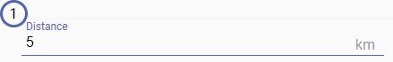
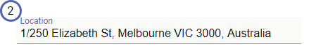
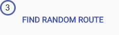
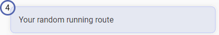
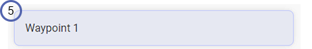

Welcome to Chaos Run
Are you tired of the same old running route? Want a new route every time? Chaos Run has the answer, a new random route of whatever distance you like, that starts and ends from your location, that is different every time you run. Using the power of Google Maps, no two routes are ever the same.
How to Use
Enter a distance in kilometres of how far you want to run. This will be the complete distance within 10%, that starts and ends at your selected location.
Start typing in the location that you want to start and end, and then select from the list of locations. Points of interest will be converted to addresses. Alternately, you can select Current Location if your device has GPS.
Select FIND RANDOM ROUTE to generate your random route. It will create a set of locations (waypoints). This may take some time, so be patient.
A list of links will appear, select Your Random Running Route to open Google Maps with the complete route. Just click start to navigate to your first location.
If your version of Google Maps has issues with or does not support multiple waypoints, then select each Waypoint individually from these links. It will go from your current location to each waypoint. Return to the app to go to the next waypoint.
If your unhappy with the current route just click FIND RANDOM ROUTE again to generate a new route. No two routes are the same.
Enjoy!